A 11 könyv
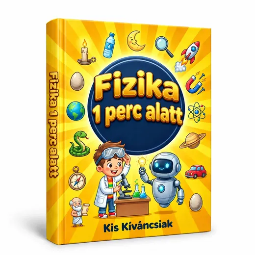
1. könyvFizika egy perc alatt
A fizika, gyerekek nyelvén elmagyarázva. Miért esnek le, repülnek vagy robbannak fel a dolgok.
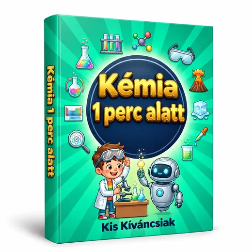
2. könyvKémia egy perc alatt
A periódusos rendszer, egyszerűen elmagyarázva. Atomok, keverékek és meglepő reakciók.
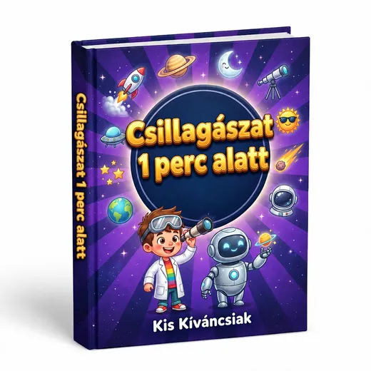
3. könyvCsillagászat egy perc alatt
A Naprendszer, a bolygók és a csillagok. Hogy felnézzen az égre, és megértse, mit lát.
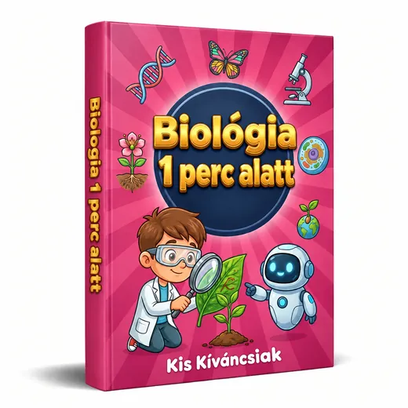
4. könyvBiológia egy perc alatt
Az élővilág, a sejttől az erdőig. Sejtek, növények és élőlények.
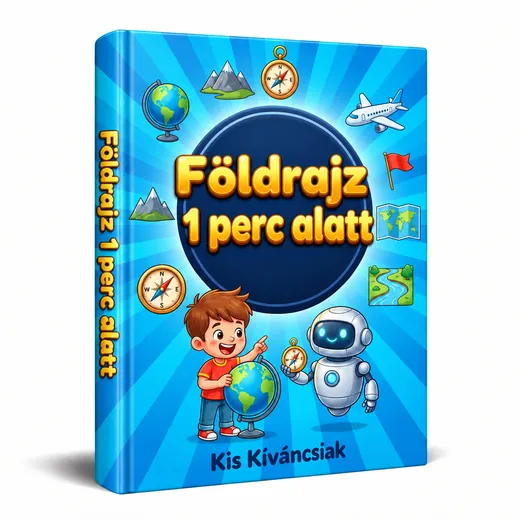
5. könyvFöldrajz egy perc alatt
Világkörüli utazás, országról országra. Kontinensek, éghajlatok és tájak.
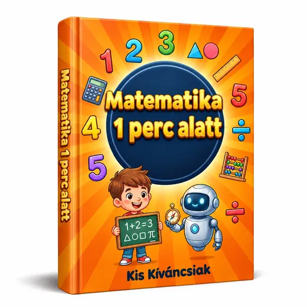
6. könyvMatematika egy perc alatt
A számolás is lehet játék. Számok, formák és logika, stressz nélkül.
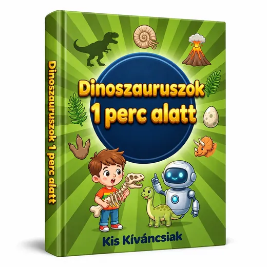
7. könyvDinoszauruszok egy perc alatt
Az óriások, akik uralták a Földet. Kövületek, fajok és meghökkentő tények.
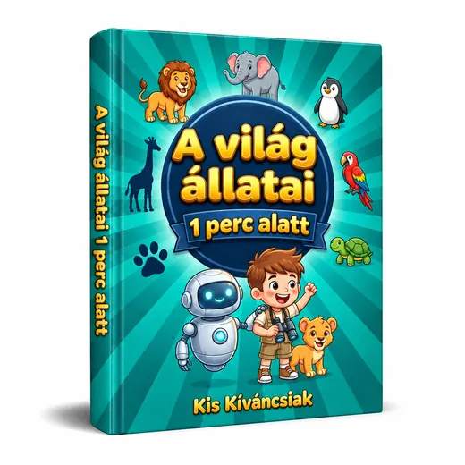
8. könyvA világ állatai egy perc alatt
A dzsungeltől az óceánig, fajról fajra. Állatok, amelyekről azt hinnéd, hogy kitalálták őket.
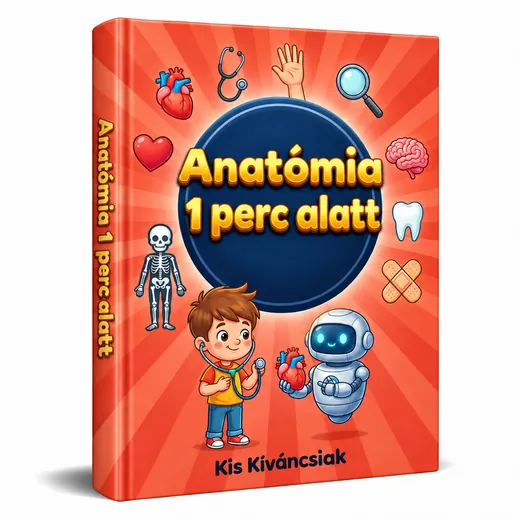
9. könyvAnatómia egy perc alatt
A teste, egyszerűen elmagyarázva. Csontok, szervek és érzékek, szakzsargon nélkül.
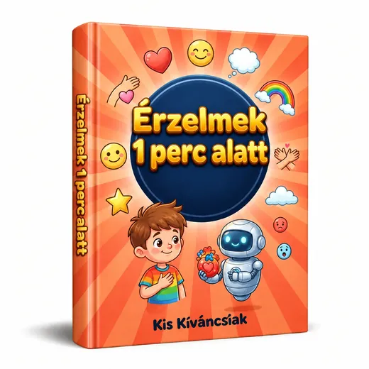
10. könyvÉrzelmek egy perc alatt
Szavakat adni annak, amit érez. Felismerni az érzelmeit és megtanulni megnyugodni.
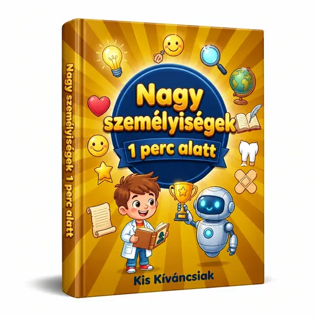
11. könyvNagy személyiségek egy perc alatt
Életek, amelyek nagy álmokra ösztönöznek. Akik megváltoztatták a világot, igazi kalandokként elmesélve.
A 8 ajándék bónuszod
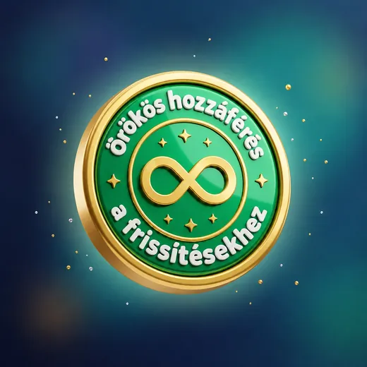
1. bónuszÉlethosszig tartó hozzáférés a frissítésekhez
A hozzáférésed nem jár le: ezt az oldalt bármikor újra megnyithatod, és mindent újra letölthetsz.
Megnyitás →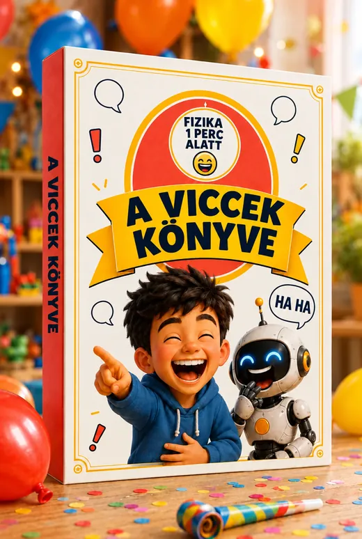
2. bónuszA Viccek Könyve
120 vicc és találós kérdés nyolc témában, a közös nevetéshez.
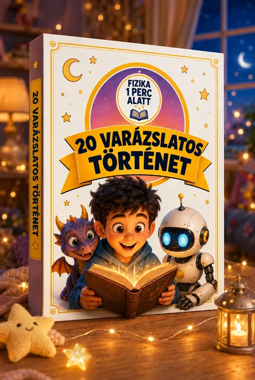
3. bónusz20 varázslatos történet
20 esti mese egy kis tudománnyal és tanulsággal, mindegyik végén egy beszélgetésindító kérdéssel.
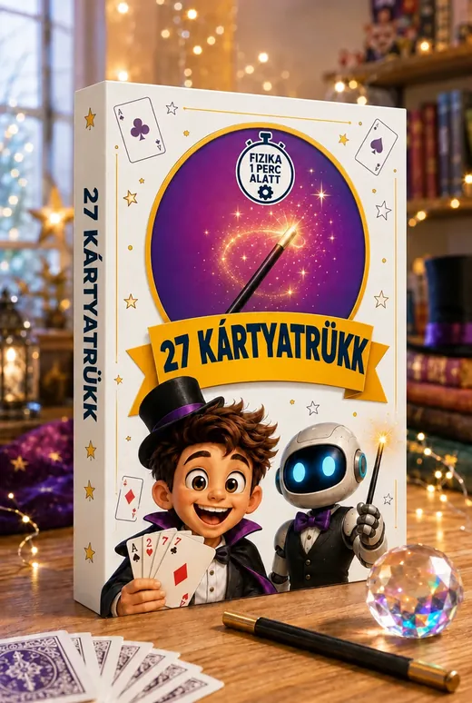
4. bónusz27 kártyatrükk
27 bűvésztrükk egy pakli francia kártyával, lépésről lépésre.
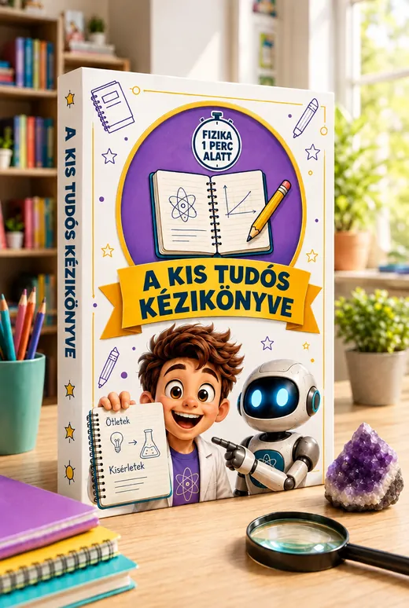
5. bónuszA Kis Tudós Kézikönyve
Hogyan gondolkodik egy igazi tudós? Tudományos módszer, biztonsági szabályok, 40 szavas szótár, megfigyelési naplók és kísérleti jegyzőkönyvek.
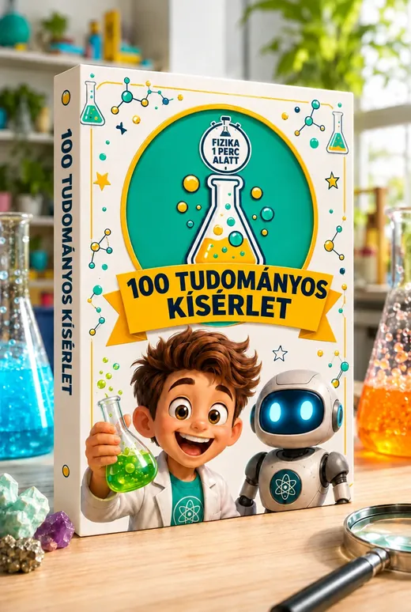
6. bónusz100 otthon elvégezhető tudományos kísérlet
100 igazi kísérlet otthoni anyagokból, mindegyik hat lépésfotóval.
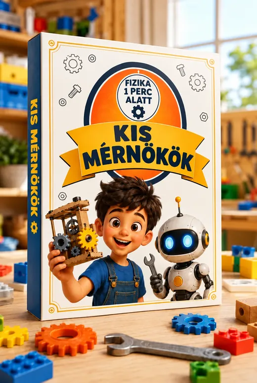
7. bónuszKis Mérnökök
20 építős projekt kartonból és otthoni anyagokból: híd, torony, daru, katapult és még sok más.
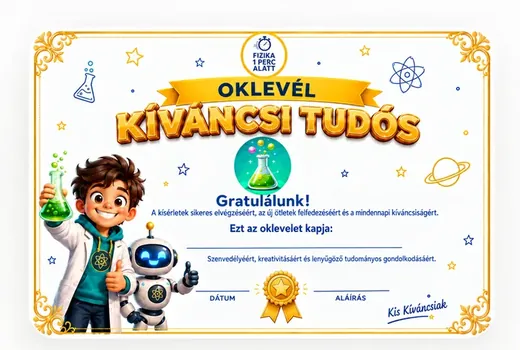
8. bónuszA Kis Tudós Oklevele
Nyomtatható oklevél a kis tudósnak, amelyre a nevét is ráírhatod.
Következő lépés
- Mentsd el ezt az oldalt a könyvjelzők közé: ez az élethosszig tartó hozzáférésed.
- Töltsd le a 11 könyvet és a bónuszokat a telefonodra, a tabletedre vagy a számítógépedre.
- Kezdjétek azzal a témával, amelyről a gyermeked a legtöbbet kérdez: minden fogalom egy perc alatt elolvasható.
- A könyvek végén lévő kvízzel és villámkérdésekkel ellenőrizhetitek, mit tanultatok.
Saját, családi használatra. Továbbértékesítése és megosztása tilos.